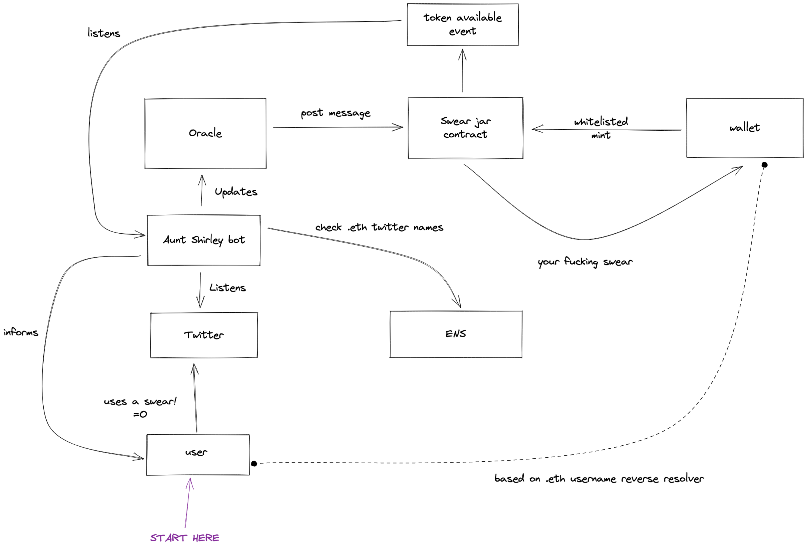

Swear Jar
gm/gn/ge/ga wagmi
The Swear Jar is a smart contract, oracle, and bot to help users pay for their foul language.
You what now
So it turns out my day job is good for exactly one thing: discussing how much I swear and how I need to start paying for it.
I dunno, fuck them.
Let's go ahead and create a system whereby a user on Twitter swears, the user is confirmed to have an ENS domain and a wallet, and then a new token is made for minting by that user so that they can keep their swear words as a badge of honor. Or something. I'd say we should charge a fee but the fucking gas prices these days...
butt how
Take a look at this handy diagram

There are five players in this game:
- The fucking user
- The fucking Twitter bot
- The fucking oracle contract
- The fucking swear jar contract
- And ENS
The basic flow goes:
- Bot watches Twatter for swears
- User make swear =O
- Bot checks if user has a valid ENS domain and wallet
- Bot tattles on user to oracle
- Oracle informs swear jar with: Twitter message and wallet addr
- Bot waits for event from swear jar then replies to user with minting link
- User fucking ignores because why in the fuck would they mint their own swear words. In this environment. With these fees.
Guess what, friendo, I've done the research. I have calculated the numbers. I have read the analytics. Let me break down the entire fool proof plan that will make you famous and broke for implementing a goddamned stupid idea.
The bot
Aunt Shirley bot (yes, you have to use this name) has one job:
- monitor potential swearers who probably have a Ethereum wallet
- catch those dirty swears and rat on the user
- remind the user they need to pay up or risk ostracization from CT
Step one should be mostly easy:
- with the dev account you already setup, you're going to use a Filtered Stream
- add a rule that looks like this
{ "value": "-is:retweet bio_name:.eth", "tag": "foul mouthed children" }
Now you have a stream of tweets, presumably from people with an ENS domain.
Step two is filtering the stream so start by getting the right fields:
https://api.twitter.com/2/tweets/search/stream?tweet.fields=id,text&expansions=author_id&user.fields=usernameWith that stream, you can parse the text for swears using isProfane from the badwords package. Then, take the username and parse out the potential ENS domain and confirm validity with ENS. Here are some examples:
const sampleUsernames = ['vitalik.eth', '⟠ toast.eth ', 'Farokh.eth', 'ETHDenver', 'Sriram Krishnan - sriramk.eth']
const clean = sampleUsernames
.map(user => user.match(/[a-zA-Z0-9]*\.eth/))
.filter(user => user != null)
.map(([ens]) => ens.toLowerCase())
console.log(clean)
// [ 'vitalik.eth', 'toast.eth', 'farokh.eth', 'sriramk.eth' ]With your clean names, check ENS to make sure those are valid domains and have associated wallets. Should be a straightforward process with ethers: https://docs.ethers.io/v5/api/providers/provider/#Provider-ResolveName
Assuming everything has gone well, you now have two important pieces of data:
- users wallet address
- their tweet url (theres an id in those results, figure it out)
This data can be used when contacting T H E O R A C L E.
The final bit of work Aunt Shirley needs to do is listen for new tokens in the swear jar. Now, if Aunt Shirley is also the oracle, this will be easy. Just wait for the transaction to complete and grab the event out of the result. If you use a separate oracle, you need a long poll on the event log from the swear jar. Once the event happens, Aunty can reply to the offensive and profane tweet and demand compensation.
The oracle
This could be real simple or real hard. Either you use a fancy oracle or your shitty project has faith in Aunt Shirley's ability to post some data to a contract. Up to you.
Taking the simplest approach:
- strap a wallet private key to Aunt Shirley
- when Aunt Shirley has confirmed the data, it sends a message to your contract to prepare a new token
Boom, done.
The contract
This is the best thing ever.
- Import openzepplin ERC721 and AccessControl contracts
- Create a GENERATOR_ROLE (this will be your oracle) and a DEFAULT_ADMIN_ROLE (this will be you)
- You probably need the following functions:
event TokenPrepared (uint256 tokenId, address profanePerson); modifier isWhitelisted (address sender, unint256 tokenId) { require(tokenList[tokenId] != address(0)); require(tokenList[tokenId] == sender); _; } function newToken (address allowed, bytes32 tweetUrl) external onlyRole(GENERATOR_ROLE) returns (uint256 tokenId); function mint (uint256 tokenId) external isWhitelisted(msg.sender, tokenId); // if you make mint payable, a withdrawl function might be nice
Or you could get a lazy-minting nft contract and make up for the deficencies with a minting dapp. Would be cheaper for you that way. A lazy-minting contract would require a change in how the bot listens for token prep and contacts the swearer though.
Wrapping it up
I doubt I'll ever get around to actually building this but if you, dearest fucking reader, do build this, I would love to see it.